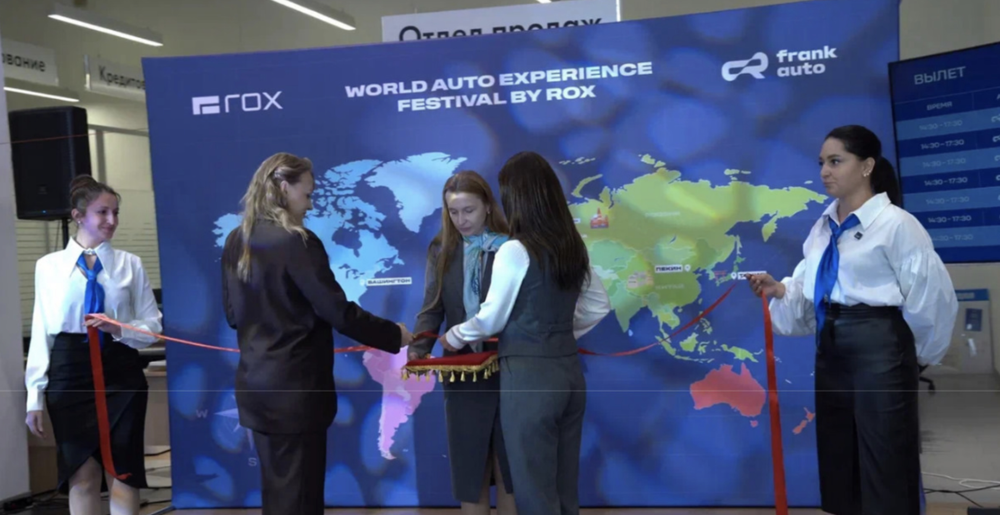
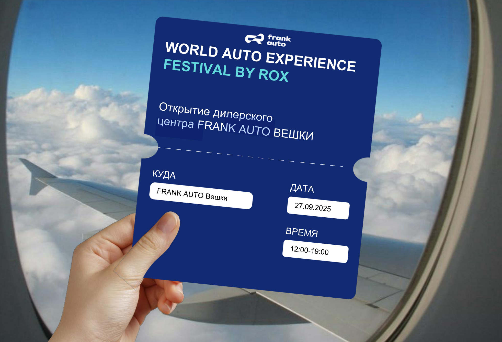
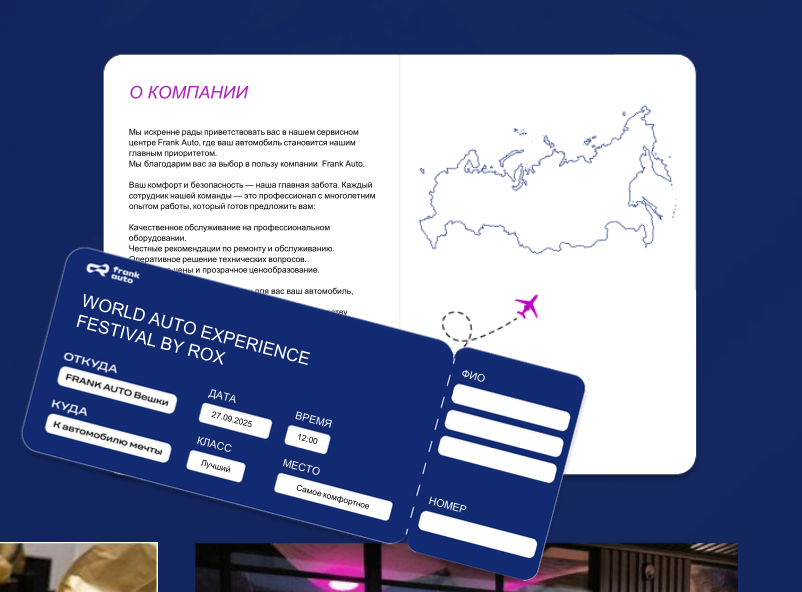
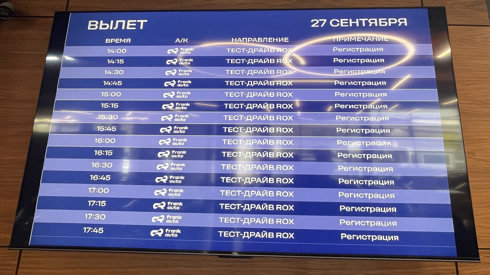

World Auto Experience Festival by ROX - открытие дилерского центра Frank Auto Вешки и вывод нового бренда ROX через experience-концепцию «Все автомобили мира в одном автоцентре».




| Этап | Что сделано |
|---|---|
| Стратегия | Согласование с импортёром, позиционирование ROX |
| Концепция | «Все автомобили мира в одном автоцентре» |
| Интерактив | Автопаспорт путешественника, карта мира, штампы-визы |
| Гастрономия | Кухня мира: Германия, Франция, Корея, Китай, США |
| Шоу | Балет «Щелкунчик», шоу-балет TODES, диджей |
| Тест-драйвы | 50+ тест-драйвов, консультации менеджеров |
| Партнёры | Пакеты Комфорт-класс 200 000 ₽, Бизнес-класс 300 000 ₽ |
| Результат | План продаж 100% за 2 месяца, 150 B2C-контактов |
Гостей встречали хостес в форме стюардесс авиакомпании FRANK AUTO AIR. На входе выдавали «Паспорт путешественника» и «Посадочный талон». Задача - пройти четыре тематические локации: Германия, Япония, Америка, Китай.
В каждой зоне - автомобили брендов соответствующей страны, мастер-классы и отметка в паспорт. В Японии - оригами с признанным мастером. В Америке и Германии - ароматические саше и выжигание по дереву. В Китае - чайная церемония «Пин Ча».
Для гостей провели интеллектуально-спортивную игру «Шахматы БРИКС Фатум», разработанную 62 экспертами из 17 стран. Для детей работали роботы-трансформеры.
Кульминацией вечера стал балетный перформанс «Щелкунчик» под руководством Екатерины Черных (Your Nutcracker) при участии Show and Circus. Перед этим - энергичное шоу танцевальной студии Аллы Духовой «TODES».
Весь день - фуршет с блюдами четырёх стран, тест-драйвы и розыгрыш призов среди гостей, собравших все отметки в паспортах.